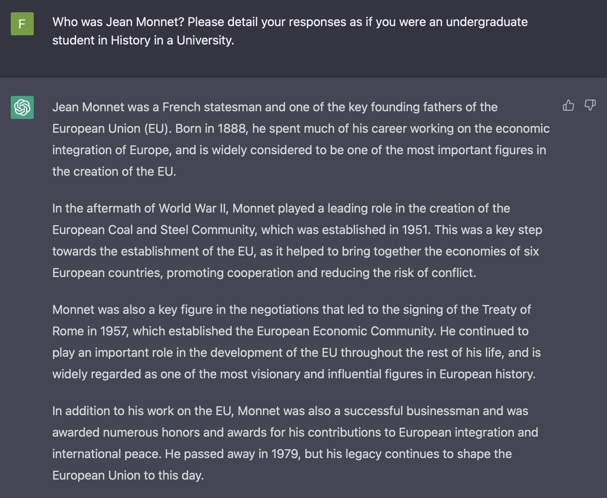

« Prompting the European Union
history »
perspectives sur les IA génératives et l’histoire
de l’intégration européenne
Frédéric
Clavert, C2DH,
Université du
Luxembourg
L’Europe dans les médias. Chaire Jean Monnet IDECE. 4 avril 2024.
introduction
qui suis-je?
histoire des relations internationales
histoire numérique
memory studies
IA générative?
Quelques recherches en cours
en histoire / memory studies
- History & Theory (Kansteiner (2022) / Bonaldo and Pereira (2023)),
- Frédéric Clavert / Sarah Gensburger (Sciences Po), Memory Studies Review: « Is AI the future of collective memory? »,
- Un article plus généraliste pour 20&21, avec Caroline Muller (Rennes 2),
- Dossier American Historical Review, Artificial Intelligence and the Practice of History
- Philippe Rygiel, « ChatGPT : “Non je n’ai pas inventé cette une de presse” (menteur) »
- « OpenForum », Eastern European Holocaust Studies, M. Makhortykh
IA générative et histoire
quelles peuvent être nos sources?
données d’entraînement
prompts (invites)
texte/image généré(e)
entraînement
- jeux de données massifs (image+métadonnées ou texte)
- Reinforcement Learning with Human feedback (RLHF)
- aspects humains de l’entraînement
- digital labor
Quelles perceptions du passé sont-elles embarquées dans ces jeux de données?
voir Makhortykh, Vziatysheva, and Sydorova (2023) sur la Shoah en Ukraine
« Charles De Gaulle bronze sur une plage de Normandie »

[…] GPT-3.5 est entraîné sur une vaste quantité de données provenant d’Internet. Les chercheurs et les ingénieurs en apprentissage automatique collectent des textes provenant de diverses sources, telles que des articles de presse, des livre$$s, des sites web, des forums, des blogs et d’autres documents accessibles au public. Ces textes couvrent un large éventail de sujets et de styles d’écriture, ce qui permet au modèle de développer une compréhension générale de la langue.
(source: ChatGPT)
les textes crées

les images créées
Ursula von Der Leyne [sic] and Emmanuel Macron, Peter Pavel in the image of knights of the round table
(source)
les prompts
des perroquets stochastiques?
- séquence de mots la plus probable
- assemblage de pixels le plus probable
prompts et Union européenne
la difficile quête des sources
Jeu de données issues de Stable Diffusion
- dix millions de prompts,
- très peu sur l’Union européenne,
- beaucoup plus sur des personnages liées à l’Union européenne.
mélanger passé, présent et futur
army of the european union invades budapest 2 0 2 2, highly detailed painting, digital painting, artstation, concept art
army of the european union fighting on the streets of budapest 2 0 2 2, highly detailed illustration for time magazine cover art
army of the european union with tanks fighting on the streets of budapest 2 0 2 2, highly detailed oil painting
mélanger présent et mythologie européenne
Ursula von Der Leyne and Emmanuel Macron, Peter Pavel in the image of knights of the round table

ChatGPT “Crée une image représentant Ursula Von der Leyen, actuelle présidente de la Commission européenne, lors de son couronnement en tant que reine de l’Europe. Assure-toi que les drapeaux de l’Union européenne sont visibles et que la cérémonie de couronnement est mise en évidence.”
Conclusion
lien actualités – perceptions de l’histoire
- agression russe contre l’Ukraine comme exemple paradigmatique